第九章 π和e
这是两个在数学中极为重要的无理数。π几乎跟
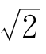
一样古老，e却很年轻。它们两个是近亲，又都是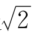
的远亲。木工师傅有两句从古流传下来的口诀，叫做“周三径一，方五斜七”。意思是说，直径为1的圆，周长大约是3；边长为5的正方形，对角线之长约为7。
这是人们对圆周率π和
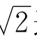
这两个无理数的粗略估计。这两个无理数，一个来自“圆”，一个来自“方”，但不能相提并论。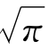
比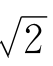
的用处要多得多，不但有关圆的计算少不了它，有关角度和弧长的测量和计算也常常与它有关。自有人类文化以来，各国的工程师、工匠都要用到它，都想知道它的准确值。为了求出π的更准确的近似值，一代又一代的数学家献出了智慧和劳动。π比
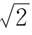
难算得多。2000多年前，人类已经能把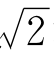
算得相当精确[1]。但把π从两位小数3.14推进到3.1416，就用了500多年。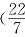
≈3.14是公元前3世纪阿基米德的成就，3.1416是三国时期我国数学家刘徽的贡献。）从3.1416到祖冲之的3.1415926＜π＜3.1415927，
中间又过了200多年。和欧洲比起来，中国的这个过程算是够快的呢！欧洲是过了1000多年，才有人赶上祖冲之！
前面提到过，祖冲之建议用
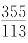
来近似地代替π，这更了不起。因为，当分母不超过16000时，没有比它更好的近似分数了。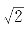
一被发现，人们就知道它是无理数。可π的脾气，让人难以捉摸。要知道，公元前1650年，埃及人已经用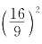
≈3.16来作为π的近似值了。可直到1761年，人类和它打了3000多年交道后，才知道π是无理数。π和 也有很多相似的地方。
也有很多相似的地方。
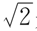
是正方形对角线长与边长之比，不管是大正方形还是小正方形，这个比都是一样的，都是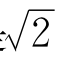
，这容易证明。π是圆的周长与直径之比。不管大圆小圆，这个比都是一样的，都是π（要证明这一点，就得用极限概念了）。
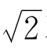
不能用分数准确地表示，π也是如此（只是长期以来，人们不知道罢了）。对π的理解，还多了一层困难。对角线是直的，人们理所当然地认为对角线应当有确定的长度；尽管古代有不承认
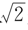
是数的数学家。可是，圆周可不是由直线段凑成的。什么叫做圆周长，这本身就是一个问题！
古代的工匠和建筑师们不觉得这是个问题。在生产实践中用到圆周长时，他们一开始大概是用绳子来测量，经验多了，就发现了规律：不管圆大圆小，周长与直径之比是相等的。道理何在呢？
从希腊的阿基米德到中国的刘徽，不约而同地用圆的内接（和外切）正多边形的周长来逼近圆的周长。阿基米德用到正96边形，刘徽用到圆内接正192边形，以至正3072边形。他们没有给圆周长下定义，但从他们的做法上可以看出：他们认为，圆周长就是圆的内接（外切）正n边形周长（当n→＋∞时）的极限。这个看法是从实践中得来，经过实践检验的。现代数学就把它正式作为圆周长的定义。定义对不对，好不好，不能证明，只能靠实践检验。这个定义，是经过几千年实践检验了的。
按照这个定义，容易证明这两条：
（1）对于给定直径的圆，外切正n边形和内接正n边形的周长，当n→＋∞时，有相同的极限。
（2）这个极限和圆的直径之比，是一个和直径大小无关的常数。
设内接正n边形周长为sn，外切正n边形周长为ln，怎样证明
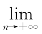
sn和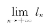
存在而且相等呢？这又需要我们前面说过的实数基本性质——递增有界数列必有极限。为了证明sn递增有界（ln递减有界），还要用到一些几何知识，例如“三角形两边之和大于第三边”。为了证明两个极限相等以及（2），还要用到一些极限运算规律。
总之，要把π的来历说清楚，没有实数理论、没有极限概念是不行的。
要把π的值算得更准，还要靠数学和科学技术的发展。靠计算正n边形周长，是很花时间的。祖冲之的成就
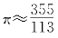
，要算到24576边的正多边形才行！不知当时他到底是怎么算出来的！后来，数学家发现π可以用无穷乘积或无穷级数表示，也就是用数列的极限表示。例如，韦达公式
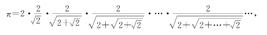
瓦里斯公式
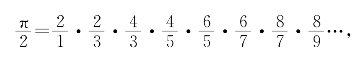
莱布尼茨公式
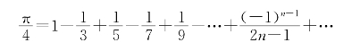
等，但这些公式计算起来也并不快。更实用的办法是，利用反正切函数来表示π。例如马青公式
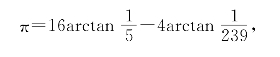
斯图模公式
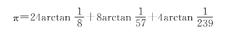
等。公式里的反正切函数，可以用级数来计算，
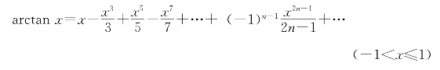
利用这些公式和计算机，可将π的近似值算到小数点后成百上千位。
祖冲之的纪录，首先被中亚细亚的阿尔·卡西打破，他在1427年算到小数点后16位。后来，德国的鲁道夫算到35位。1706年，英国的梅钦算到101位。
1873年，英国人香克斯算到707位！他花了近20年的时间干这件事，还让人把这707位小数的π值刻在他的墓碑上。可惜，从528位之后，他就算错了，而在他之前已有人算到500位。这样，近20年的光阴就一笔勾销了。
把π的数值算得这么精确，实际意义并不大。现代科技领域使用的π值，有＋几位就足够了。如果你用鲁道夫的35位小数的π值，计算一个能把太阳系包围起来的圆的周长，误差还不到质子直径的百万分之一。
1882年，德国的林德曼证明了π不是任何一个整系数代数方程式的根，即π是超越数。这就证明了：用圆规、直尺画一个和直径为1的圆面积相等的正方形是办不到的，解决了2000多年前提出来的三大几何作图难题之一。
现在有了电子计算机，计算π值容易多了。1949年超过2000位，1958年超过1万位，1973年超过百万位，这是两位法国女数学家的成绩。1983年，两位日本科研人员已把π算到了800万位以上。
回顾历史，人类对π的认识过程，反映了数学和计算技术发展的一个侧面。
π是
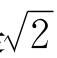
的远亲。尽管两个都是无理数，但 是二次方程式x2－2＝0的根，而π不是任何整系数代数方程式的根，这个差别是很大的。
是二次方程式x2－2＝0的根，而π不是任何整系数代数方程式的根，这个差别是很大的。
π有一个近亲，就是自然对数的底e。e＝2.71828…也是无理数。说e和π是近亲，有两层意思：
第一，e也是超越数；
第二，e和π之间有着奇妙的联系，那就是：
eiπ＝－1。（i2＝－1）
这个等式的证明其实不太难，在学过复数之后，再有一些微积分知识就能证明了。
现在，我们从另一个地方谈起。由于e这个数和许多自然现象、社会现象有联系，可以从许多不同的话题扯上去。
你一定洗过衣服，就从洗衣服谈起吧。
要洗一件衣服，先要用少许水和洗涤剂，把衣服充分浸泡、揉搓，使污物充分溶解或悬浮于水中，再把衣服拧一下。由于水不能拧得干干净净，衣服上仍带有含污物的水。设衣服上残存污物为m0（克）（包括洗涤剂），残存水量为w（斤）。我们还有一桶清水，共A（斤）。
怎样合理地运用这A斤清水，尽可能把衣服洗干净呢？
假设我们把这A斤水分成n次使用，每次用量分别为a1，a2，a3，…，an（斤），经过n次洗涤，衣服上还剩多少污物？
第一次，把带有m0克污物和w斤水的衣服放到a1斤水中，经过充分搓洗，这m0克污物溶于（w＋a1）斤的水中。
当把污水倒掉，把衣服拧干时，衣服上还残留多少污物呢？由于m0克污物均匀分布于（w＋a1）斤水中，所以
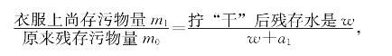
就是
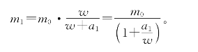
通过类似的分析可知，第二次洗涤后衣服上残存的污物量为
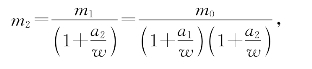
而n次洗涤后衣服上残存污物量为
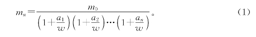
通过分析，得到了公式（1）。这叫做把实际问题转化为数学问题，也可叫做建立“数学模型”。
现在，要讨论的数学问题是：
（1）对固定的n，如何选取a1，a2，…，an，才能使mn最小？
（2）当n增大时，mn的最小值是变大还是变小？（或按别的什么规律变化？）
从公式（1）可以看出，想要mn最小，便要乘积
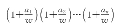
最大，条件是a1＋a2＋…＋an＝A。由于
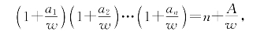
当n固定时，
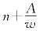
也固定。于是，问题转化为，已知n个正数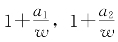
，…，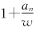
之和为定数S＝n＋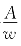
，这n个数的乘积在什么时候最大？我们利用一个“平均不等式”，就是说，任意n个正数c1，c2，c3，…，cn的几何平均值不超过它们的算术平均值，即
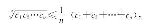
这样必然有
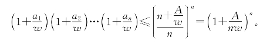
也就是说，每次用水量相等时，可以使残存的污物量最少。这就解决了刚才提出的第一个数学问题。
现在来看，把同样多的水分成n＋1次洗，效果是不是更好一些呢？对n＋1个正数c1，c2，…，cn＋1用平均不等式，这里，c1＝c2＝…＝cn＝，cn＋1
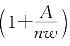
＝1，得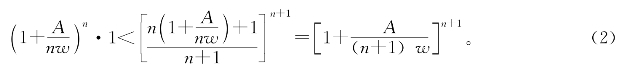
可见，把水分成n＋1次洗，要比分成n次洗好。也就是说，数列
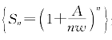
是递增的。那么，在水量一定的情形下，是不是只要洗的次数足够多，就可以使残留的污物要怎样少就怎样少呢？也就是说，数列
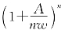
会不会无限增大呢？不会的。这仍然可以利用平均不等式来证明。根据刚才的推导方法，任意n＋2个正数c1，c2，…，cn＋2满足
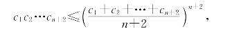
取c1＝c2＝…＝cn＝
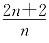
，cn＋1＝cn＋2＝1代入，即得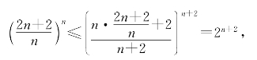
即
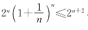
，从而得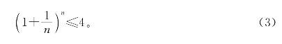
当n很大时，必能使
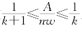
成立，此时有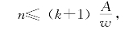
从而可得
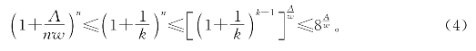
由此可见，数列
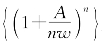
是有界的。这说明当水量A一定、衣服拧干后含水量w一定时，不管把水分成多少次洗，总要剩下一定数量的污物在衣服上。从（3）式可以看出，如果w＝A，想使剩下的污物少于原来的，是不可能的。数列递增而有界，故必有极限。当A＝w时，极限
这个极限便是e。
由于当时，有不等式
两边的极限都是，所以
刚才我们从日常洗衣服谈起，最后找出了e。另外，在计算利息，研究生物种群的增减，估计放射性元素的蜕变量，以及其他大量自然、社会现象的数学模型分析中，都经常会碰到这个e。
e虽然是用极限式（5）来定义的，但想用（5）式来计算e，是很费事的。即使你耐心地计算到，也只能得出2.7051和2.71828…你看，这两个数在第二位小数上就不同了。幸好，e还有一个级数表示法
用这个级数计算e要快得多。这里n！＝1·2·3·…·n。你不妨试一试，把
算出来，便得到e≈2.718，精确到万分之二了。
e不但计算起来比π容易，要证明e是无理数也比证明π是无理数容易得多。从（7）式出发，用一点关于级数或极限的知识，便能证明e是无理数。因为，由不等式
也可以用
让m→＋∞时取极限，由（7）式得
如果e＝，上式两端乘以n！，左边是整数，右边最后一项不是整数，这是一个矛盾，所以e不是有理数。
以e为底的对数叫自然对数，记作lnx。它的反函数是指数函数ex。这两个函数在高等数学中特别重要，在不同的科技领域中都要用到。如果x取复数值，又可以用ex表示三角函数。可以说，初等函数几乎都和ex，lnx有关系。用微积分知识可以证明
如果把x换成θi，这里i2＝－1，便得到
而cosθ和sinθ的无穷级数恰巧表示为
因而有著名的欧拉公式
eiθ＝cosθ＋isinθ。
当θ＝π时，便得到上面提到的奇妙等式
eiπ＝－1。
可见，要进了高等数学的大门，才能弄清古老的π和年轻的e之间的亲密关系。
至于π和e的超越性的证明，则需要更多的高等数学知识，这里就不介绍了。
【注释】
[1]公元前100年的海伦，已经掌握了我们在第三章中介绍的方法。用这个方法可轻易地求出的＋几位小数。